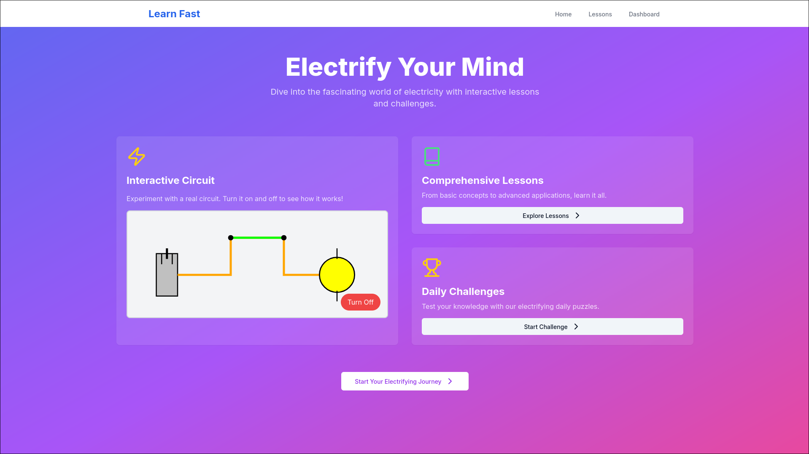
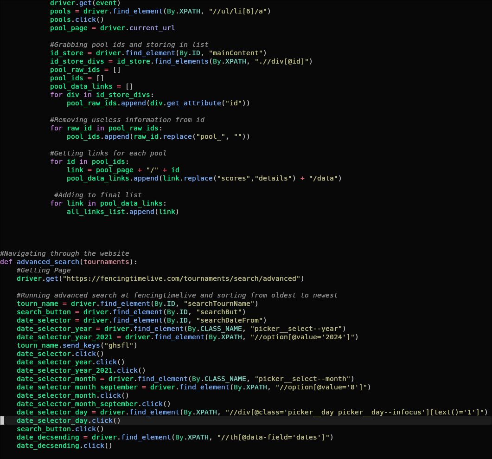

Education Learning Platform Website:
The goal of this project was to create an online learning platform for late elementary/early middle school students that would help them learn the core concepts of electricity and magnetism in Physics using short lessons, 3D-Models, and quizzes. To build the website, we decided to use React, Node, and Next.js with TypeScript while hosting it on GitHub Pages. Out of the group, React and Next.js were the biggest factors in making the project easier to work on. React allowed us to create components that could be used on multiple different pages, making development faster. Next.js was helpful in making page navigation smoother and easier to implement. While I have used these resources before, this project allowed me to gather more experience and delve deeper with each one. One of the major problems we encountered during development was deploying the website to GitHub pages. Unlike with this website, which is made using only static content, it is much harder to deploy a dynamic webpage. However, we eventually figured it out, which I believe was our greatest accomplishment as doing this was something completely foreign to both of us. If we were to attempt this project again, I would make sure that we didn't focus on the deployment, as while we did learn a lot, we also lost just as much time/progres on the project. Instead of continuing to work on this project, I want to take the time to apply the skills I learned to other, more impactful/important projects to me. More specifically, I want to rewrite this portfolio website using the technology in this project, such as TypeScript and Next.js.

Fencing Elo Ladder:
The goal of this project was to gather match data of Georgia High School Fencing League(GHSFL) tournaments from the website fencingtimelive.com in order to generate an Elo ranking system similar to what is found in chess. While there already exists Elo rankings for fencing online, they do not take into account GHSFL tournaments. This project consisted of four main parts: automatic web traversal/scraping, data storage, Elo calculation, and a display website. For both web traversal and scraping, I used selenium to automatically traverse through every single GHSFL tournament using fencingtimelive's advanced search feature. I then scraped the data from each pool bout and stored the results in a JSON file. Finally, I created a custom Elo formula more tailored towards fencing and calculated the Elo of every player, storing the results in another JSON file. In the future I would like to continue and improve this project. Unfortunately, I haven't been able to finish the results webpage, meaning there is no easy way to view the results unless you are reading the pure JSON. I would also like to do more data analysis on the tournaments, such as finding team elo, individual wins/losses, and average final tournament ranking. In doing this project, I learned a large amount about how web scrapers and crawlers work. I also learned more about how JSON files work and how they can be used to store and modify data.

Flappy Bird AI:
This project was done with my groupmates to learn more about how machine learning works. Machine learning is giving computers the ability to learn/adapt without human interference. When deciding on our project, my groupmates and I decided to try and use machine learning to teach a computer how to play flappy bird all on its own. We chose flappy bird specifically as it is very popular, it is a simple game that wouldn't be too difficult for the program to learn, and there were a large amount of resources online that could help us if we got stuck. Using python, we created a machine learning algorithm using the NEAT framework and made it play flappy bird. This project taught me the inner workings of machine learning and how factors such as neurons, weight, fitness, and other variables are critical in training a machine learning model. I also learned about the practical uses of machine learning as well. The ability for a program to be able to learn and adapt could be useful for programs that are designed to be used in unpredictable enviornments, such as rovers on the moon or probes in the deep ocean. Machine learning gives us the ability to build intelligent programs that can adapt to solve problems without having to be manually coded.

Fnall Command:
This is my first Rust project that I made to learn some of the basics of rust. It is a terminal command that can be used to find a
specific file fast by simply typing out " fnall 'file' ". For a more focused search, you can optionally specify a directory like: " fnall 'file' 'directory' "

Portfolio Website:
This project is the website you are currently visiting. Instead of using a website maker online such as Weebly and Google Sites, I wanted to make my own website
using HTML, CSS, and a little bit of JavaScript. This is the first websites that I have built that will be a full website and not for learning. Due to this and only having
four days to complete this project, the source code is not very organized and well documented, which is what I am planning to fix in the future (Source code can be found in my GitHub).

Home Server:
In order to get more hands-on experience with networking and servers, I decided to host my own home server. I used an old 2017 MacBook Air and two 4TB external drives
running Ubuntu Server (Debian had issues with MacBook Drivers). Currently, my server is running: